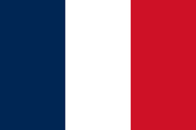
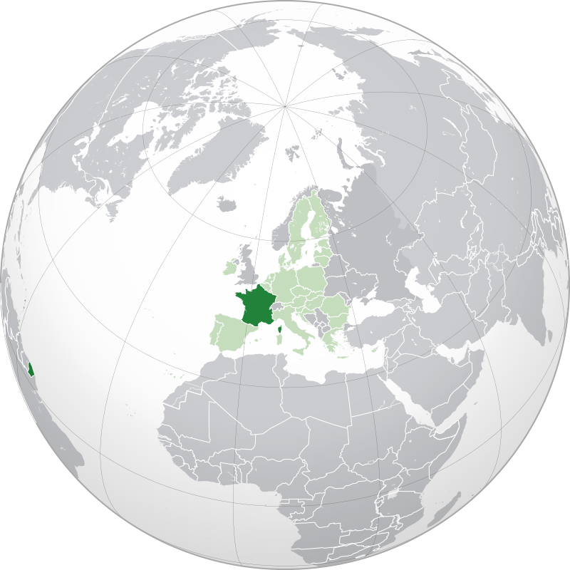

 La Francia (in francese: France), ufficialmente Repubblica francese (in francese: République française), è uno Stato situato nell'Europa occidentale[10] e nell'Europa meridionale, ma che possiede ugualmente territori disseminati su più oceani e altri continenti.
La Francia è una repubblica costituzionale unitaria, avente un regime semipresidenziale. Parigi è la capitale, la lingua ufficiale è il francese, le monete ufficiali sono l'euro e il franco CFP nei territori dell'oceano Pacifico. Il motto della Francia è «Liberté, Égalité, Fraternité» e la bandiera è costituita da tre bande verticali di uguali dimensioni di colore blu, bianco e rosso[11]. L'inno nazionale è La Marsigliese.
È uno stato formatosi all'inizio dell'Alto Medioevo, che prende il suo nome dal popolo germanico dei Franchi. Dall'inizio del XVII secolo alla prima metà del XX secolo, ha posseduto un vasto impero coloniale. Nella seconda metà del secolo è stata uno degli Stati fondatori dell'Unione europea. Inoltre, è la terza potenza nucleare mondiale, uno dei membri permanenti del Consiglio di sicurezza delle Nazioni unite e uno Stato aderente alla NATO. Ugualmente è membro del G7, del G20, della zona euro, dello spazio Schengen e ospita la sede del Consiglio d'Europa, del Parlamento europeo e dell'UNESCO. La Francia possiede una certa influenza in materia politica, economica, militare e culturale in Europa e nel mondo come media potenza[12][13][14].
 Esercita la propria sovranità su territori presenti in tre oceani e quattro continenti[15]. La sua geopolitica è importante a livello mondiale, perché possiede un gran numero di ambasciate e consolati, secondo solo a quello degli Stati Uniti , e dispone di basi militari su tutti i continenti. La Francia detiene la prima zona economica esclusiva (spazio marittimo) al mondo, al quale si aggiunge un'estensione piattaforma continentale di 579000 km² nel 2015[16]. Al 1º gennaio 2016 la popolazione totale della Francia è di circa 67,2 milioni d'abitanti, secondo le stime pubblicate dall'INSEE, di cui 64 513 000 nelle regioni metropolitane, 2 114 000 nelle regioni d'oltremare e 604 400 nelle collettività d'oltremare e in Nuova Caledonia. È il secondo Stato più popolato dell'Unione europea dopo la Germania. Inoltre, è anche lo Stato più esteso dell'Unione europea e il terzo paese più vasto d'Europa[17]. È, nel 2014, la terza potenza economica europea dopo la Germania e il Regno Unito, nonché la sesta potenza economica mondiale per prodotto interno lordo nominale (nona a parità di potere d'acquisto) e possiede un livello di vita molto elevato. Antica potenza coloniale, la sua cultura si è diffusa attraverso il mondo ed è oggi membro dell'Organizzazione internazionale della francofonia. La lingua francese è, dopo l'inglese, la seconda lingua più studiata al mondo[18] ed è una delle sei lingue ufficiali (e una delle due lingue di lavoro) dell'ONU.
Tratto da wikipedia.